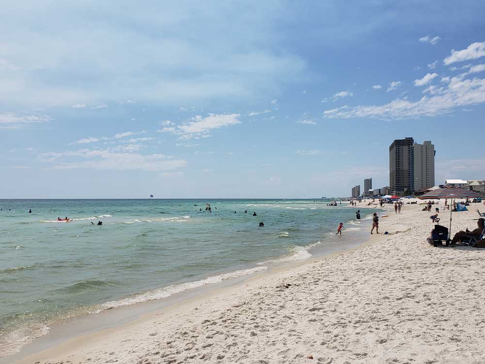

Florida is distinctive for its large Cuban expatriate community and high population growth, as well as for its increasing environmental issues. The state's economy relies mainly on tourism, agriculture, and transportation, which developed in the late 19th century. Florida is also renowned for amusement parks, orange crops, winter vegetables, the Kennedy Space Center, and as a popular destination for retirees. It is the flattest state in the United States, and Lake Okeechobee is its largest freshwater lake.
The state's close proximity to the ocean influences many aspects of Florida culture and daily life. Florida is a reflection of influences and multiple inheritance; African, European, indigenous, Latino, and Asian heritages can be found in the architecture and cuisine. Florida has attracted many writers such as Marjorie Kinnan Rawlings, Ernest Hemingway and Tennessee Williams, and continues to attract celebrities and athletes. It is internationally known for golf, tennis, auto racing, and water sports. Several beaches in Florida have turquoise and emerald-colored coastal waters.
About two-thirds of Florida occupies a peninsula between the Gulf of Mexico and the Atlantic Ocean. Florida has the longest coastline in the contiguous United States, approximately 1,350 miles, not including the contribution of the many barrier islands. Florida has a total of 4,510 islands that are ten acres or larger in area. This is the second-highest number of islands of any state; only Alaska has more. Much of the state is at or near sea level. Florida has the lowest high point of any U.S. state. The American alligator, American crocodile, American flamingo, Roseate spoonbill, Florida panther, bottlenose dolphin, and manatee can be found in Everglades National Park in the southern part of the state. The climate varies from subtropical in the north to tropical in the south. Along with Hawaii, Florida is one of only two states that have a tropical climate, and is the only continental state that has both a tropical climate and a coral reef. The Florida Reef is the only living coral barrier reef in the continental United States, and the third-largest coral barrier reef system in the world (after the Great Barrier Reef and Belize Barrier Reef).
Southwest > Florida

Panama City Beach
Waterfront town and vacation destination in northwest Florida known for miles of white-sand beaches fronting the calm, clear waters of the Gulf of Mexico
Pensacola Beach
Florida resort community on the Gulf Coast barrier island of Santa Rosa with white-sand beaches include Opal Beach, part of Gulf Islands National Seashore